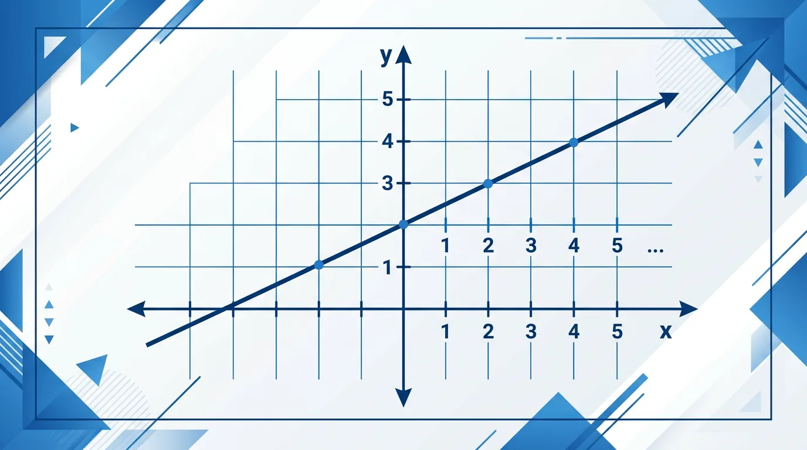

能解释 k、b 对图象的几何意义（斜率 / 纵截距）
会用待定系数法，根据两点求一次函数解析式
能分析 k/b 正负对图象位置的影响并归纳规律
1. 函数 y = 3x − 2 中，哪个是斜率？
2. 直线 y = kx+b 经过原点，则 b = ?
已知（And）：你会在坐标系里描点、连线。
问题（But）：给你 y = 2x+1，每次都要算好几个点才能画——太慢了！
因此（Therefore）：掌握"截距法"，只需 2 个特殊点就能精准画出直线。
用截距法画 y = 2x − 4 时，两个截距点是？

你已会画线段和坐标系 · 但曲线与速率的世界还等着你 · 一次函数就是连接"关系"与"图形"的桥梁
一次函数是形如 y = kx + b 的函数，其中 k 和 b 是常数，且 k ≠ 0。这里的 x 是自变量，y 是因变量。k 称为斜率，表示函数的倾斜程度；b 称为截距，表示函数与 y 轴的交点。例如，y = 2x + 3 是一个一次函数，斜率为 2，截距为 3。生活中，一次函数可以用来描述匀速运动的距离与时间的关系。假设一辆汽车以每小时 60 公里的速度行驶，行驶 t 小时后行驶的距离 s 可以表示为 s = 60t，这就是一个一次函数。
一次函数的图像是一条直线。斜率和截距决定了这条直线的位置和倾斜程度。例如，函数 y = 2x + 1 的图像是一条斜率为 2、截距为 1 的直线。当斜率为正时，直线从左下方向右上方倾斜；当斜率为负时，直线从左上方向右下方倾斜。截距决定了直线与 y 轴的交点。例如，y = -3x + 4 的图像是一条斜率为 -3、截距为 4 的直线。在实际应用中，可以通过图像直观地理解函数的性质，比如速度随时间的变化。
斜率 k 表示函数的变化率，可以通过两点坐标计算。给定两点 (x₁, y₁) 和 (x₂, y₂)，斜率 k = (y₂ - y₁) / (x₂ - x₁)。例如，点 (1, 3) 和 (2, 5) 的斜率为 (5 - 3) / (2 - 1) = 2。斜率的意义在于描述函数的增减性：k > 0 时，函数递增；k < 0 时，函数递减。生活中，斜率可以用来表示速度、价格变化率等。比如，某商品的价格每天上涨 5 元，其价格与时间的关系可以用斜率为 5 的一次函数表示。
截距 b 表示当 x = 0 时 y 的值，即函数与 y 轴的交点。例如，y = 3x + 2 的截距为 2，表示当 x = 0 时 y = 2。截距在实际问题中常常表示初始值。比如，某手机套餐的月费为 50 元，每分钟通话费用为 0.1 元，则总费用 y 与通话时间 x 的关系为 y = 0.1x + 50，截距 50 表示即使不打电话也需要支付的固定费用。截距还可以用于解决实际问题，比如计算初始成本或初始距离。
调查两种手机套餐：A套餐月租30元含100分钟，超时0.3元/分钟；B套餐无月租0.5元/分钟
当 k > 0 时
直线从左下到右上（单调递增）
当 k < 0 时
直线从左上到右下（单调递减）
b 决定纵截距
b > 0：直线与 y 轴正半轴交；b < 0：负半轴交
图象过 (0, −3) 和 (1, 1)，解析式是？
遇到困惑？问 AI 老师吧！
👀 看见它：在生活的真实场景里，「一次函数」长什么样？先找到一两个能摸得着的例子。
🧩 拆开它：它由哪几个关键部分组成？每个部分起什么作用、背后的原理是什么？
🚀 迁移它：换一个情境，这个结论还成立吗？试着解释一个课本之外的新例子。
先独立作答，再点选项查看对错与错因。
快递公司收费规则为：首重1公斤8元，续重每公斤2元。寄3.5公斤包裹需付多少元？
下列哪个是一次函数的正确表达式？
若某函数图像经过(0,3)和(2,7)两点，其表达式是？
函数y=-3x+5的图像与y轴交于点____
答案：(0,5)
令x=0时y=5
某函数满足x每增加1，y减少2，且当x=0时y=4，其表达式是____
答案：y=-2x+4
斜率k=-2，截距b=4
某出租车收费：起步价 5 元，之后每千米 2 元。以行驶千米数 x 为自变量，费用 y 的解析式是？
直线 y = −3x + 6 与 x 轴的交点是？
💡 调斜率与截距，观察一次函数图像变化。
外链：https://phet.colorado.edu/sims/html/graphing-lines/latest/graphing-lines_zh_CN.html
开放任务：用三步写出你如何向同学讲清「一次函数」。